French Paintings from the Hermitage
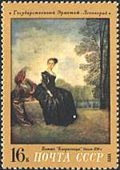
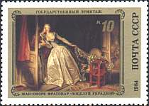
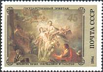
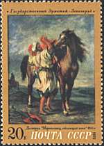
Poussin, the founder of French Classicism, and Claude Lorrain, master of the Classical landscape, are allocated separate rooms. Eight works by Antoine Watteau, represent the more intimate and elegant aspect of French art in the early 18th century.
French painting of the 19th to early 20th century is represented by approximately 850 items. Chronologically, this section begins with works by artists from the late 18th and early 19th c, whose contributions to the history of art vary enormously, but whose works embody the artistic aspirations of the age: Lethiere, Lefebre, Caraffe, C.Vernet, Girodet, P.Chauvin, artists who were very popular during the time of the Empire such as Guerin, F.Gerard and others.
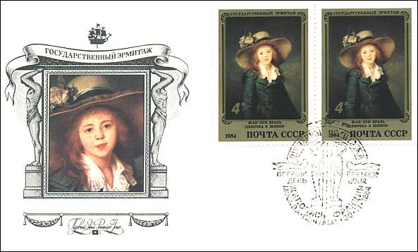
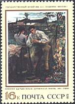
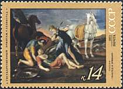
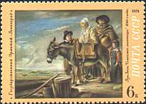
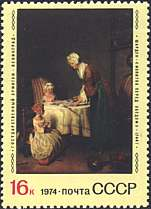
Each of the most celebrated masters is represented here: David by his superb Sappho and Phaon (1809), Gros by Napoleon on the Bridge at Arcole (about 1797), Ingres by Portrait of Count Guriev (1821), Delacroix, the most brilliant of French Romantic artists, by two canvases: Moroccan Saddling a Horse (1855) and Lion Hunt in Morocco (1854).
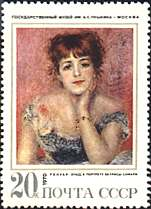
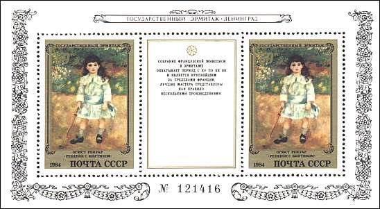
The Hermitage collection provides a good overview of the Barbizon School, a group of artists who settled in the village of Barbizon near Paris: Theodore Rousseau, Dupre, Daubigny and others, who were to have such a major influence on the development of French landscape painting, and Corot, whose works contain a peculiar combination of Neoclassicism, Realism and Romanticism. One of the focal points of the museum is the collection of late 19th and early 20th century works, which includes over 250 works.
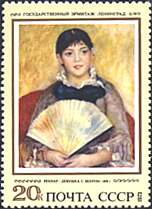
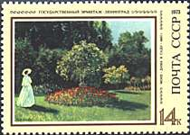
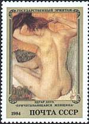
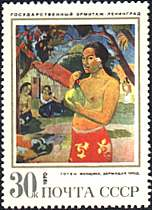
It contains seven works by one of the founders of Impressionism, Claude Monet, enabling us to judge not only his creative work, but also the evolution of the school overall: from his early Lady in a Garden (1867) to the late Waterloo Bridge (1903). There are six paintings by Renoir, including his notable Portrait of the Actress Jeanne Samary (1878); two Paris scenes by Pissaro; three landscapes by Sisley; and a series of pastel drawings by Degas.
Other French Paintings on this site: Art Series , Monet , Renoir , Gauguin , Chagall